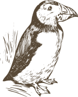

Introduction

Bienvenue sur notre site consacré à l'appréciation des macareux, ces adorables oiseaux côtiers
que
l'on trouve dans les régions arctiques et subarctiques du monde entier. Notre site a pour but de
vous faire découvrir la beauté et la diversité des macareux à travers une galerie de photos et
de
vidéos.
Nous avons rassemblé une collection de magnifiques images de macareux dans leur habitat naturel
qui
vous permettront de mieux comprendre leur comportement. Nous espérons que ces images vous
inspireront et vous feront apprécier la beauté de ces oiseaux.
Notre site n'a pas pour objectif d'être éducatif sur les habitudes et les comportements des
macareux, mais plutôt de vous offrir une expérience visuelle agréable et relaxante. Nous
espérons
que vous apprécierez votre visite sur notre site et que vous repartirez avec une appréciation
renouvelée pour ces magnifiques créatures de la nature.